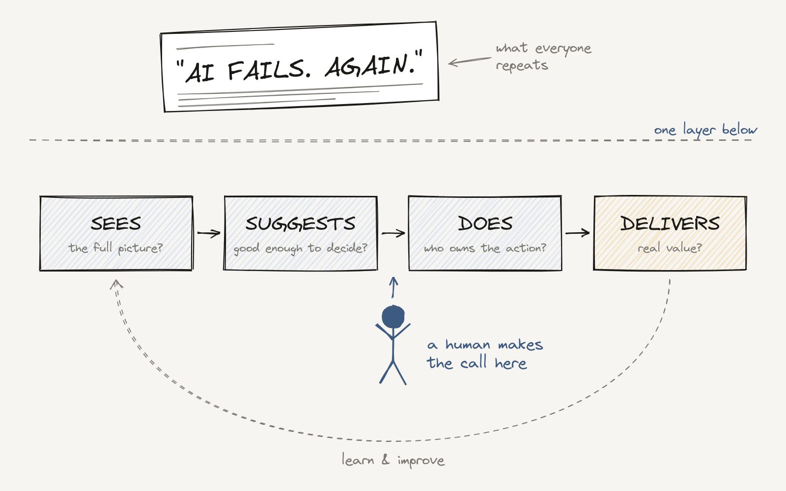

What the AI Headline Missed: 5 Real Stories of Human-in-the-Loop AI

A few weeks ago I went to a conference and left with a strange feeling. Not everyone, but most of the conversations about AI were negative.
Jobs being lost. Politics. Data leaks and hacks. Chatbots saying the wrong thing. All of it real. None of it should be ignored.
But I noticed something. Almost every story people repeated was a headline. And headlines don't carry the full context. They tell you what happened. They rarely tell you what we can learn from it, or how to do better next time.
So I started a small series on LinkedIn: What the AI Headline Missed. Five real stories, one every Monday. Some are wins. Some are failures. I picked both on purpose. Every new technology goes through mistakes on its way to maturity. That's not a reason to stop. It's how we improve.
If you missed one or two, here they are in one place, with what each one teaches about keeping a human in the loop.
Five stories, five lessons
An AI made 200 "mistakes." 120 were discoveries.
On the Isle of Arran in Scotland, an AI from ArchAI scanning terrain data flagged 200 spots where the records said nothing existed. When archaeologists checked, 120 of them were real sites that expert surveys had missed. The AI wasn't wrong. The answer key was incomplete. Lesson: when AI disagrees with your experts, ask if your data is complete before you call it an error. Read the LinkedIn post · Source: Ingenia
To your customer, the chatbot is the company.
Air Canada's chatbot gave a customer the wrong refund policy. In front of a tribunal, the airline argued the chatbot was responsible for its own words. It lost. Lesson: every answer your AI gives is your policy, in writing. Decide who owns it, how it stays in sync with your real rules, and when it hands off to a human. Read the LinkedIn post · Source: BBC
Fast is not the same as helpful.
Klarna's AI handled the work of 700 support agents in its first month. Resolution time dropped from 11 minutes to under 2. A year later, Klarna started hiring people again, because service quality had dropped. Lesson: don't measure AI by how many conversations it closes. Measure how many customers it actually helps. Read the LinkedIn post · Source: Bloomberg
Spray the weed, not the field.
Greeneye put cameras and AI on a sprayer. It spots each weed and opens only the nozzle above it. In trials with the University of Nebraska–Lincoln, herbicide use dropped 87%. No one was replaced. The machine just started seeing what the farmer always wished it could. Lesson: look for the places where you waste money because you can't see the details fast enough. Read the LinkedIn post · Source: Strip-Till Farmer
Imperfect AI. Right decision.
A Washington State University study with Google tested AI on wildlife camera photos, including from Glacier National Park here in Montana. The AI got some animals wrong. But the models built from its labels matched the human experts in 85–90% of cases, and months of work became roughly a week. Lesson: "Is AI perfect?" is the wrong question. Ask: does the error change the decision? Read the LinkedIn post · Source: WSU
Human in the loop: where the human sat
Put the five stories side by side and one pattern shows up. The result never depended only on how good the AI was. It depended on where the human sat.
The archaeologists didn't trust or reject the AI blindly. They checked its leads in the field. The researchers let AI label the common animals but kept experts on the rare ones. Greeneye's machine sprayed on its own, but the farmer still owned the weed plan. That's what working with AI looks like when it goes well.
Now look at the two failures. Air Canada let its chatbot speak to customers with no one owning what it said. Klarna took people out of the loop too far, then had to bring them back. Same technology. The difference was the human.
This is the same idea behind the Cockpit Rule. A pilot uses autopilot at cruise and takes manual control for takeoff and landing. The plane doesn't change. The moment does. And it's why, in my own work with AI agents, nothing goes live until I approve it. The agents speed up the mechanics. I make the decisions.
Human in the loop doesn't mean a human checks everything. It means a human decides where AI acts alone, where it needs a second look, and who owns the result when it gets something wrong.
Four questions before you trust the headline
Read the stories again and you'll see the lessons follow the same path every AI decision follows: what AI sees, what it suggests, what it does, and what it delivers. So these are the questions I now ask, in that order.
Does the AI have the full picture?
Before you call it a mistake, check the data. ArchAI's "errors" were gaps in the record, not in the model.
Does the error change the decision?
AI doesn't need to be perfect. It needs to be good enough for the decision in front of you. A human sets that bar, not the model.
Who owns the action?
When AI talks to customers or acts on its own, someone has to own what it says and know when to step in. Air Canada learned this in court.
Are we measuring real value?
Fast and cheap are easy numbers. Customers helped and money saved are the real ones. That's the point I made in conscious AI adoption: the question isn't how much AI we use, but where it creates value.
Balance, not hype
I'm not asking anyone to be an AI cheerleader. Two of these five stories are failures, and I think they're the most useful ones. Air Canada and Klarna made mistakes that other teams can avoid now, because they made them first.
What I am asking for is balance. For every headline about what went wrong, there's a team somewhere quietly learning what works. Both sides deserve our attention.
If I had to tell a colleague one thing from this series, it would be this: don't stop at the headline, and don't take the human out of the loop. The lesson, and the value, usually sit right where a person makes the call.